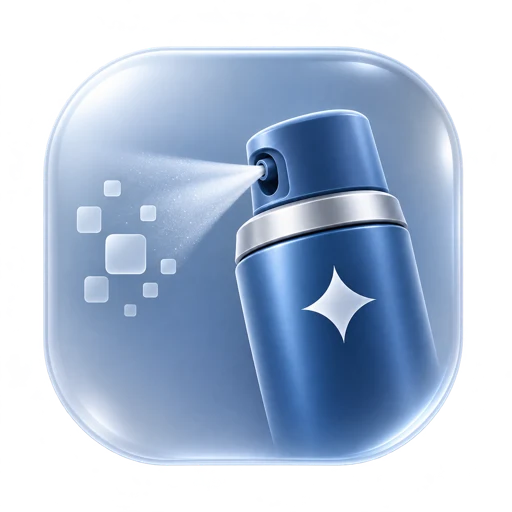
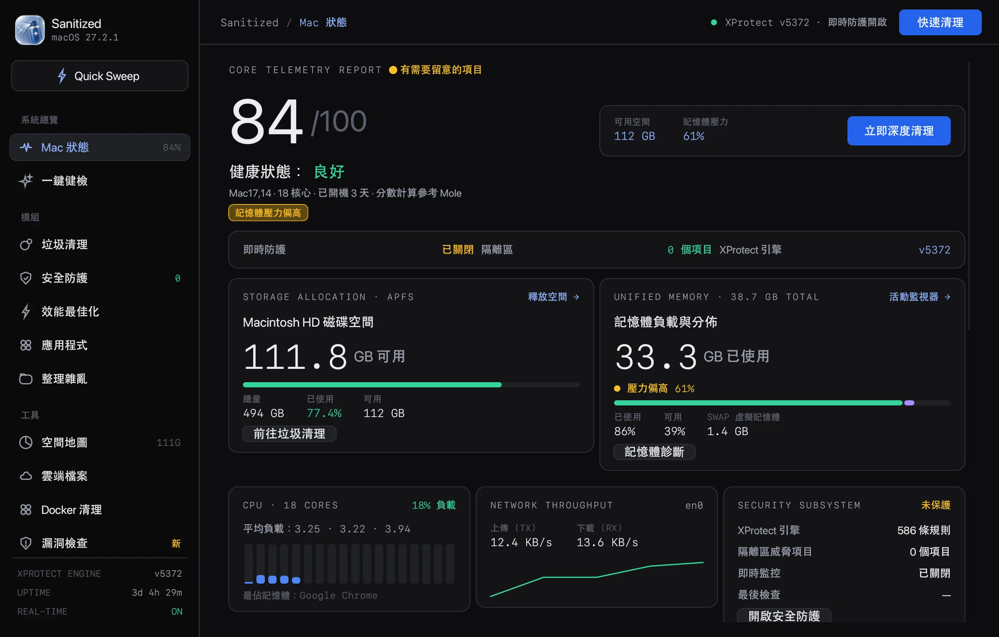
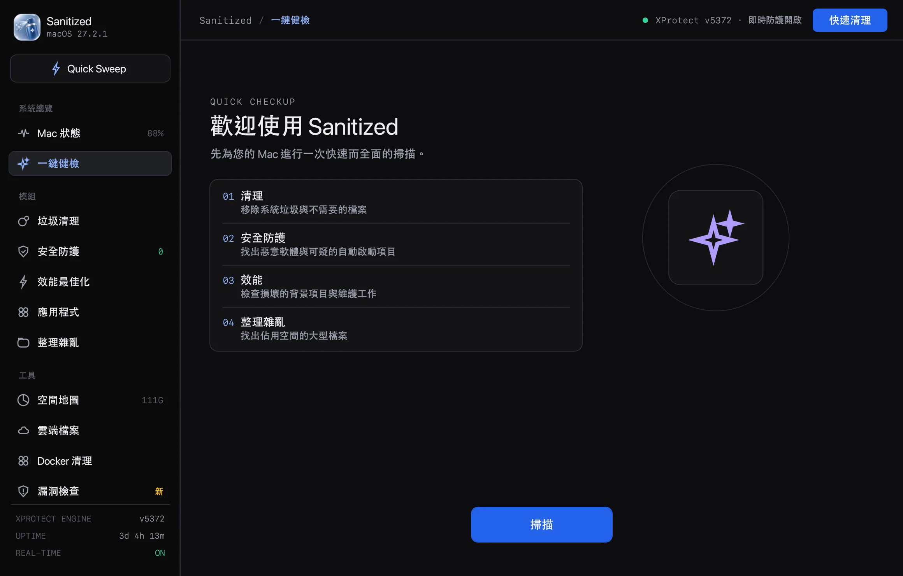
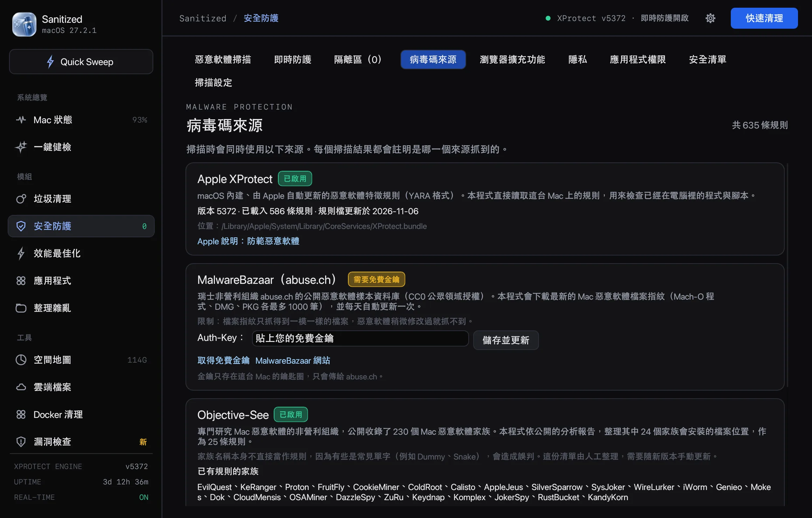
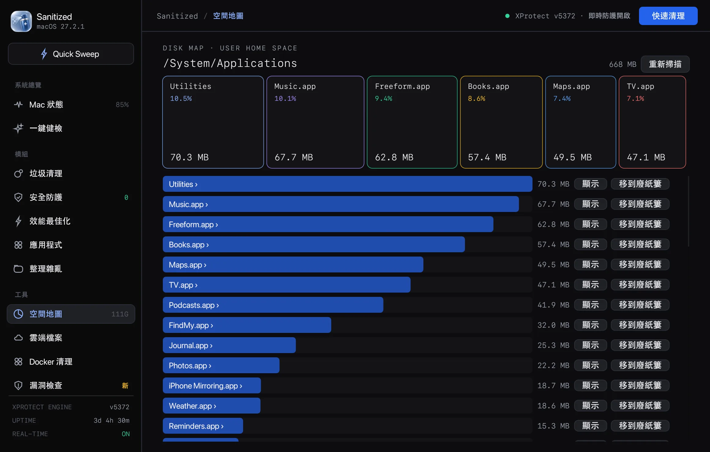
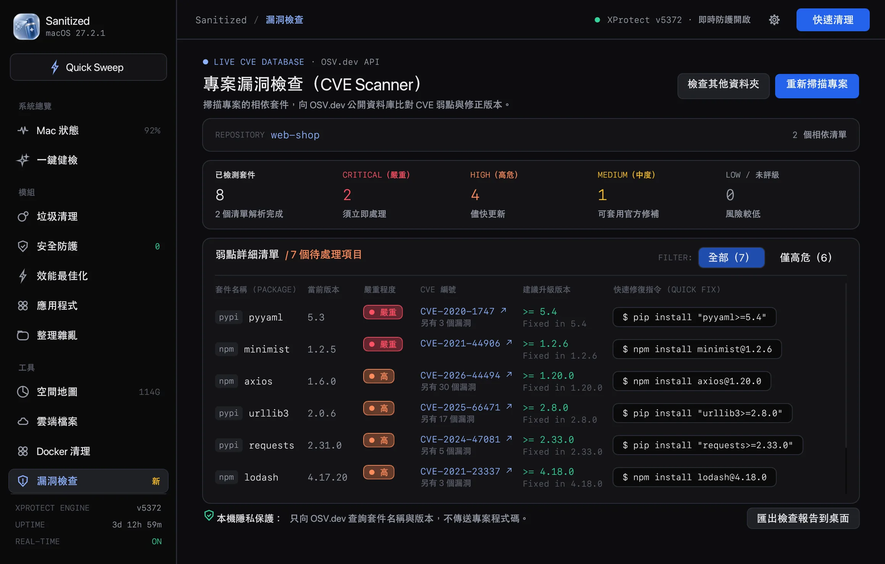

Sanitized 是用 Rust 打造的原生 Mac 工具。垃圾清理、惡意軟體掃描、效能維護、空間分析，全部在你的電腦上完成。刪掉的東西都先進垃圾桶或隔離區，隨時可以還原。


從每天的狀態檢查，到深入找出佔空間的資料夾、潛伏的惡意軟體和專案裡過期的套件。
不知道從哪裡開始？一鍵健檢會依序跑完清理、安全、效能和大型檔案檢查，再把結果整理成一張清單，讓你決定要處理哪些。

直接讀取 macOS 內建 XProtect 的 YARA 規則，再加上公開的惡意軟體資料庫。每個掃描結果都標明是哪個來源抓到的。

六個資料夾平行計算，一邊掃描一邊顯示預估剩餘時間。大小用實際佔用的磁碟區塊計算，結果和 du 一致。

選一個資料夾，Sanitized 會找出裡面所有專案的相依套件，向 OSV.dev 查詢已知的 CVE，並告訴你升級到哪一版就能修好。

健康分數、記憶體壓力、磁碟、CPU 與網路，加上選單列小工具。
一次跑完清理、安全、效能與大型檔案檢查。
快取、記錄檔、損壞的偏好設定、Xcode 殘留、npm／Cargo 等開發快取。
惡意軟體掃描、即時監控、隔離區、瀏覽器擴充功能與 app 權限檢查。
刷新 DNS、重建快取、整理資料庫等維護任務，以及登入與背景項目管理。
完整移除 app 連同設定與快取，找出已刪除 app 留下的殘留檔案。
找出大型檔案與內容完全相同的重複檔案。
視覺化每個資料夾的大小，逐層深入，附預估時間。
找出已下載到本機的大型雲端檔案，釋放空間而不刪除雲端上的版本。
分三個層級安全清理 Docker 的磁碟用量，只用 docker 指令，絕不清除 volume。
掃描專案相依套件，向 OSV.dev 查詢已知 CVE 並建議升級版本。
不用打開視窗，也能看到記憶體壓力、健康分數與保護狀態。
Sanitized 的每一個刪除動作，都照這幾條規則來。
檔案移到垃圾桶，可疑檔案移到隔離區。不會在沒問過你的情況下永久刪除任何東西。
虛擬機器磁碟、Docker 的資料檔都受保護，沒有刪除按鈕。Docker 清理永遠不會動到 volume。
沒有帳號、沒有追蹤、沒有分析。只有每天檢查一次 Sanitized 新版本（可在設定關閉）、執行漏洞檢查、填入 abuse.ch 金鑰或檢查其他 app 的更新時才會連網。
以 GPL-3.0 開源，任何人都能檢查程式在做什麼。安裝檔使用 Developer ID 簽章並通過 Apple 公證。
每個掃描結果都標明來源，你可以自己查證。
macOS 內建、由 Apple 持續更新的惡意軟體 YARA 規則，直接從你的 Mac 讀取。
瑞士非營利組織 abuse.ch 的公開樣本資料庫。填入免費金鑰後，每天下載最新的 Mac 惡意軟體指紋。
專門研究 Mac 惡意軟體的非營利組織。依據公開分析整理出各家族的安裝位置規則。
從 GitHub Releases 下載最新版的 Sanitized-arm64.dmg。
打開 DMG，把 Sanitized 拖到「應用程式」資料夾，然後直接打開。
到「系統設定 → 隱私權與安全性 → 完整磁碟取用權限」打開 Sanitized，掃描才看得到所有位置。
需求：Apple Silicon（M 系列晶片）的 Mac，macOS 11 以上。想自己編譯？cargo run --release